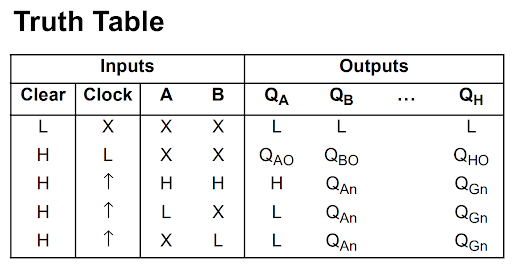

Reading Datasheets and Making Real-Life Circuits for Beginners
After learning about basic logic gates, such as AND, OR, and NOT, you may wonder what practical steps to take next. How do you go from abstract logic tables to building real-world circuits on a breadboard? What do all those pins and diagrams in a datasheet mean?
In this guide, we'll walk you through the essentials of reading datasheets and pinouts, identifying what each pin does, and using logic gate ICs to build actual circuits. You'll also learn the difference between various IC types (like 74HC08 vs. 74LS08), how to wire them up properly, and even explore shift registers for more complex logic functions.
Whether you're a beginner in electronics or a hobbyist looking to move from theory to hands-on projects, this tutorial will help you confidently use logic gate ICs on a breadboard and understand what's happening behind the scenes. Let's get right into it!
How to Read Datasheets and Pinouts
In this section, we'll explore how to read datasheets. Take a look at the AND logic gate's datasheet (the 74LS08). This datasheet includes a few important parts we will be taking a look at:
- Connection Diagram - shows the labels for the pins on the IC
- Function Table - tells us how to use the IC's pins according to their labels
- Recommended Operating Conditions - tells us what voltages to use so we don't ruin the IC
Connection Diagram
Looking at the 74LS08's datasheet, we see that there are 4 AND gates drawn into the Connection Diagram. They each have two inputs and one output:
- A1 - Input "A" of the first AND logic gate of the IC
- B1 - Input "B" of the first AND gate
- Y1 - Output "Y" of the first gate
There are also the VCC and the GND pins. VCC is the supply voltage, and GND is "ground," or 0 volts.
Function Table
- The inputs
- A - for the pins labeled A1, A2, etc.
- B - for pins labeled B1, B2, etc.
- The outputs
- Y - for pins labeled Y1 through Y4
- VIH - Minimum logic input to be considered logic level high (2V)
- VIL - Maximum logic input to be considered logic level low (0.8V)
- 74LS08 We looked at this one's datasheet
- 74HC08
- 74HC04 NOT gate Logic IC - Buy on Jameco
- 74HC02 NOR Logic IC - Buy on Jameco
- 74HC00 NAND Logic IC - Buy on Jameco
- 74HC08 AND Logic IC - Buy on Jameco
- 74HC32 OR Logic IC - Buy on Jameco
- 74HC86 XOR Logic IC - Buy on Jameco
- Pin 1 is connected to a push button.
- Pin 2 is connected to the same push button as pin 1. These are the data inputs, and they're active high.
- Pins 3-6 and pins 10-13 are all connected to a positive terminal of an LED, totalling 8 LEDs. Connect each LED to ground using a 220Ω resistor.
- Connect pin 7 to ground.
- Pin 8 is connected to the output of a 555 timer clock, demonstrated in the linked article. This pin is our clock.
- Pin 9, the clear input (active low), is connected to the last push button.
- Finally, pin 14 is connected to 5V.
- Pin 1 is connected to a push button. This will be our input that tells the shift register to load a value and is active low.
- Pin 2 is the clock for this shift register. Connect this to the 555 timer circuit mentioned previously.
- Rather than connecting all of our parallel data pins to a button and having to deal with 8 buttons at once, we will be connecting these directly to either 5V or GND. Connect these however you like on the breadboard's power rails. These are pins 3-6 and 11-14.
- Pin 7 is the inverse of the serial output (pin 9). Keep unconnected.
- Connect pin 8 to GND, as it is the ground pin.
- Pin 9 is the serial output pin. Connect a positive terminal of an LED to 5V and the negative terminal to ground with a 220Ω resistor.
- We won't worry about pin 10. Keep unconnected.
- Pin 15 is the Clock Inhibit. Keep this pin tied to GND.
- Tie pin 16 (VCC) to 5V.
Each column corresponds to a pin on the connection diagram.
Recommended Operating Conditions
These are what tell us the safe voltages and temperatures to use with this IC. For the first row, they have the minimum and maximum voltages for the voltage supply. Going over 5.25V may cause damage to the IC. Then there are a few more rows, of which two we are going to look at:
As long as our high inputs are more than 2V (but less than 5.25V) and our low inputs are less than 0.8V, then we should be able to properly use this IC. When learning how to use datasheets, these are the 3 best sections to look at.
Why are there Different Types of ICs for Logic Gates
There are two main types of AND gates:
They both are AND gates, but they have one small difference: 74HC08 and 74LS08. The HC stands for High-Speed CMOS Logic, and the LS stands for Low Power Schottky. The main differences are outlined below.
| Feature | 74LS08 (Low Power Schottky) | 74HC08 (High Speed CMOS) |
|---|---|---|
| Speed | Moderate | Very Fast |
| Logic Level High | 2.0V | 3.5V |
| Input Voltage Range | 2V-6V | 2V-6V |
| Power Efficiency | Moderate | High |
The biggest difference between these two types of ICs is the logic level high threshold and the speed of these devices. It may cause problems when using HC and LS devices interchangeably in a project.
How to Use Logic Gate ICs On a Breadboard
There are logic gate ICs for every type of logic gate. Here's a rundown for the most commonly used logic gate ICs for each gate (assuming you prefer HC over LS) and the link to buy them from my favorite and most trusted site, jameco.com:
Notice that most of these ICs all have 4 2-input logic gates (besides the NOT gate, it has 6 1-input gates). Another thing to note is that all but two of these gates have the same pinout: the NOT logic gate and the NOR logic gate. The NOR logic gate is the same as the others, but its inputs and outputs are switched around compared to the others. The NOT gate only has 1 input, so its pin arrangement will inherently be different.
NOT Logic Gate Breadboard Circuit (74HC04)
This is a working NOT gate according to its pinout. When making this circuit at home, don't forget to place the IC on the breadboard in the correct orientation.
NOR Logic Gate Breadboard Circuit (74HC02)
The circuit shown in the video has two pushbuttons that start high, and when pressed go low. This is the only logic gate IC with a different pinout than the NAND, OR, NOR, and AND ICs. Take a look at the NOR gate's datasheet and try this circuit out yourself!
NAND Logic Gate Breadboard Circuit (74HC00)
This circuit has the same button feature as the NOR logic gate's circuit. They are high when not being pressed. The NAND gate's pinout matches the AND, OR, and XOR gates' pinouts as well.
Other Uses for Logic Gates
ogic gates can be combined into many other circuits to perform more complex tasks. A common and well-known example of this is a computer's CPU. We will be diving into some less complex ICs. In this tutorial, we will be focusing on shift registers and decoders.
How to Use Shift Registers
To follow along with this section, you will need the two types of shift registers from Jameco:
The parallel in/serial out registers simply take parallel data in and output serial data. The serial in/parallel out ones do the opposite.
Shift registers have a few applications. For example, if you have one device that has a serial data bus but you need to communicate with a device that has a parallel data bus, you could use a shift register to convert the serial data into parallel data. Let's take a look at using the 74HC164 (serial in) shift register first.
Making a Serial In Shift Register Circuit on a Breadboard
To understand how to use a shift register on a breadboard, we will be making this circuit with 3 push buttons and 8 LEDs.
Now we have 3 inputs and 8 outputs. This is the truth table for these inputs from the datasheet:
This image was taken directly from this datasheet
The clear input corresponds to the button from step 6, the clock input corresponds to step 5, and the other two inputs, A and B, correspond to steps 1 and 2, respectively. When Clear is low, then the shift register clears all its data. When not clearing, but the Clock input is low, the shift register holds the current data. When both Clear and Clock are high, this is where we can alter the data. On the first clock pulse, QA will be whatever value is present in the button from steps 1 & 2. Then on the next clock pulse, QB will be altered, and so on until QH, and it repeats back to QA. How to use the 74HC164 on a breadboard:
Schematic
Making a Parallel In Shift Register Circuit on a Breadboard
This shift register is very similar to the Serial-in shift register. Open up the datasheet and let's take a look at the steps for this shift register:
When we put a value in the parallel inputs, we automatically load that directly into the shift register. Then, when we press the button from step 1 and pulse the clock input once, we should be able to see the first bit of our shift register input. Here's how to use the 74HC165 on a breadboard:
Schematic
Conclusion
By learning to interpret pinouts, recognize safe operating conditions, and implement logic functions on a breadboard, you'll be ready to make your unique circuits. Shift registers are very useful in circuits, and they have a wide variety of applications.